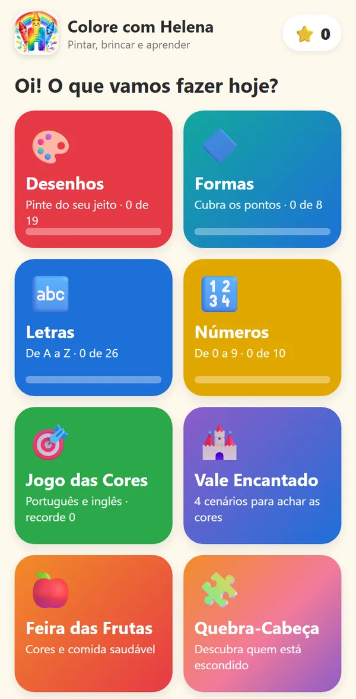
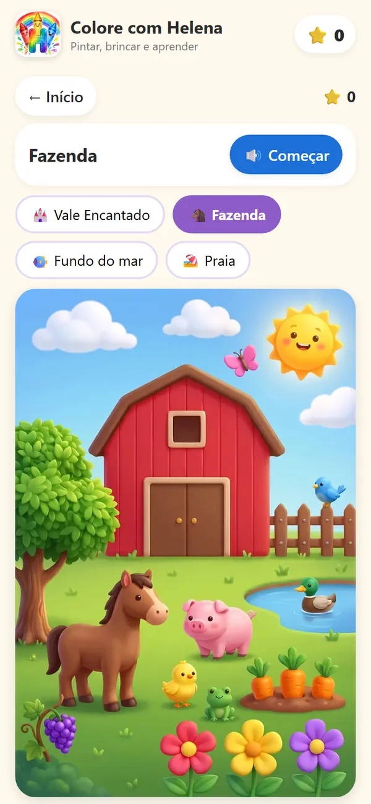
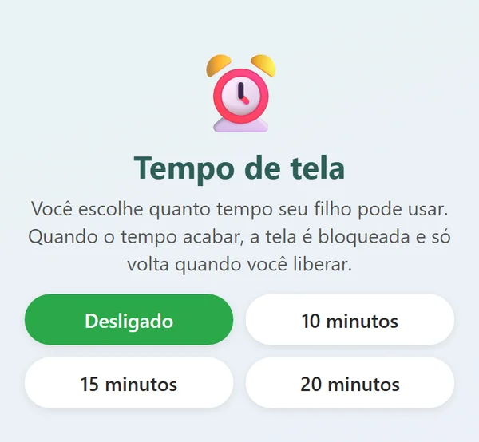
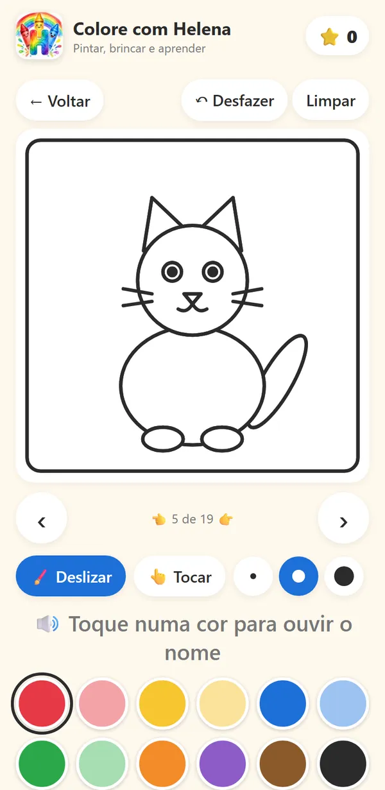
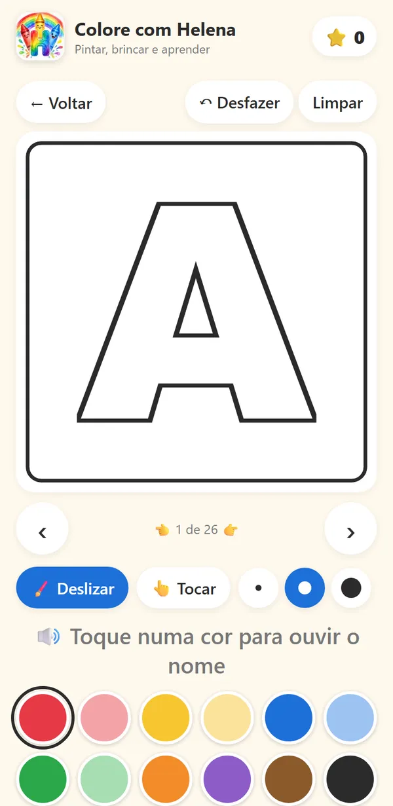
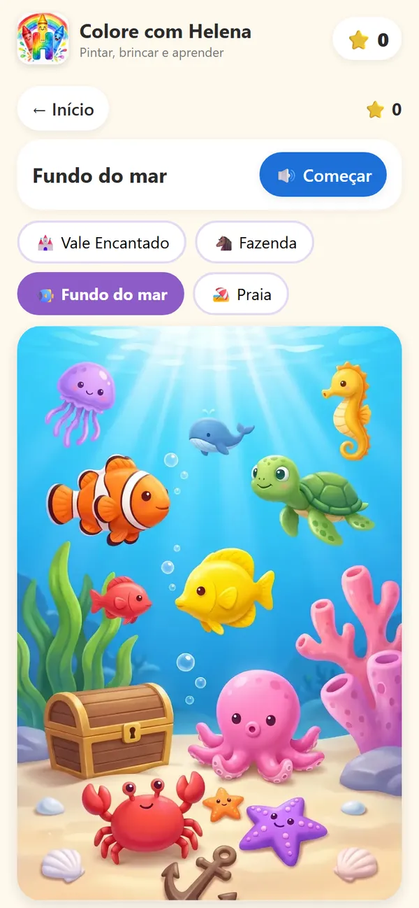
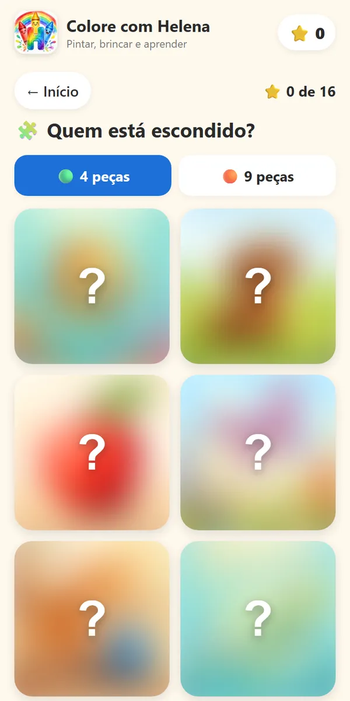
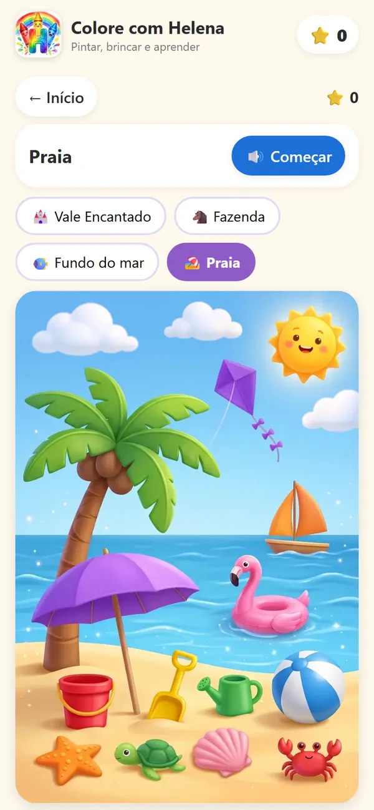
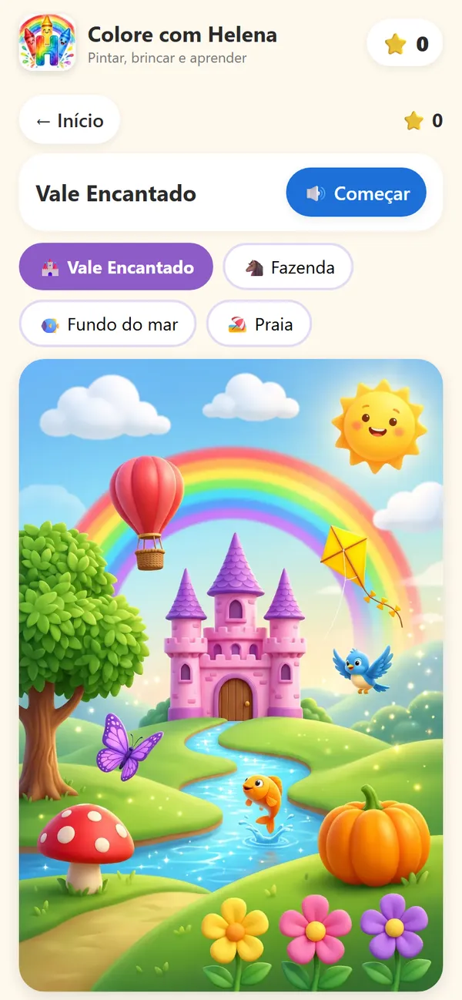

Seu filho vai passar as férias rolando vídeo… ou criando?
Troque o feed infinito por uma tela que ensina brincando.
✏️ Criado por professora especialista em Psicopedagogia e Alfabetização
Sem anúncios · Garantia de 7 dias · Cancela quando quiser

Férias em casa: você conhece essa cena?
Quando as aulas acabam, nos primeiros dias tudo é festa. Depois vem o "mãe, tô entediado", "pai, me dá o celular".
Aí a gente cede, porque precisa trabalhar, fazer o almoço, respirar um pouco. E seu filho passa a tarde rolando vídeo atrás de vídeo, sem fazer nada com as mãos nem com a cabeça.
Bate aquela culpa. Você sabe que tela sem limite não faz bem, mas também não dá para inventar atividade nova toda hora.

Tela não precisa ser só rolar feed.
A Sociedade Brasileira de Pediatria recomenda que crianças de 2 a 5 anos fiquem no máximo 1 hora por dia em telas, sempre com um adulto acompanhando, e que menores de 2 anos evitem telas (manual "Menos Telas, Mais Saúde").
Foi pensando nisso que o Colore com Helena foi criado: um tempo de tela curto, com propósito e com você por perto. Seu filho pinta, toca, ouve, encontra cores e forma letras. Ele participa em vez de só assistir.
E é você quem manda no tempo: escolhe 10, 15 ou 20 minutos. Quando acaba, a tela é bloqueada, sugere uma brincadeira longe dela e só volta quando você liberar.

Tudo o que vem no app






- Desenhos para pintar: deslizando o dedo ou tocando com o balde de tinta.
- Letras de A a Z e números de 0 a 9: cheios ou pontilhados, com voz que fala "Letra A! A de Abacaxi!".
- Formas geométricas pontilhadas para seguir o traço com o dedo.
- Agora do seu jeito: depois do pontilhado, seu filho tenta escrever sozinho.
- Jogo das Cores: o nome de cada cor em português e em inglês.
- Vale Encantado: Vale, Fazenda, Fundo do mar e Praia, para achar tudo o que tem a cor pedida.
- Feira das Frutas: as cores das frutas e um "Você sabia?" sobre alimentação.
- Quebra-cabeça com 16 figuras e Sequência de cores.
- Estrelas e medalhas a cada atividade terminada.
- Voz da Helena (feita com IA): seu filho não precisa saber ler para brincar.
- Tempo de tela: você escolhe o tempo e a tela é bloqueada quando ele acaba; só você libera. Na pausa, o app sugere uma brincadeira longe da tela ou imprimir o desenho para pintar no papel.
- Dicas para a família em cada atividade, muitas com o código da BNCC (a Base Nacional Comum Curricular) que ela trabalha.
É para você se:
- tem um filho a partir de 3 anos e quer uma opção melhor que o feed nas férias;
- quer uma atividade educativa pronta, sem ter que inventar nada todo dia;
- pode ficar por perto enquanto seu filho usa, mesmo fazendo outra coisa no mesmo cômodo;
- gosta de saber o que cada atividade trabalha.
Não é para você se:
- procura algo para deixar seu filho sozinho na tela por horas (o app foi feito para o contrário);
- seu filho tem menos de 3 anos;
- espera um app que "ensina a ler sozinho": ele ajuda a conhecer letras, números e cores brincando, junto com você;
- só usa apps baixados da loja: por enquanto ele abre por um link.
Feito por quem está na sala de aula
O Colore com Helena foi criado por uma professora especialista em Psicopedagogia, Educação Infantil, Alfabetização e Letramento, que vê todo dia como as crianças aprendem melhor quando estão brincando, mexendo, ouvindo e tentando de novo.
A ideia foi levar um pouco da experiência dela para a sua casa: atividades curtas, coloridas e com propósito, do jeito que ela faria com a turma. A Helena é a nossa personagem e acompanha seu filho em cada atividade.
Começar leva poucos minutos
- Escolha o seu plano e finalize a compra com segurança pela Kiwify.
- Abra o app pelo link que chega no seu e-mail e entre com o mesmo e-mail da compra.
- Adicione à tela inicial do celular ou do tablet. Pronto: ele fica com ícone, como um aplicativo, e funciona até sem internet.
Experimente a parte grátis antes
Alguns desenhos, letras, números, quebra-cabeças, o Jogo das Cores e a Feira das Frutas ficam abertos para você testar com seu filho hoje mesmo.
Abrir a parte grátisPensado para crianças, do jeito certo
- Sem anúncios dentro do app. Nada de propaganda no meio da brincadeira.
- Nenhum dado da criança é coletado. Só pedimos o e-mail do adulto que assina.
- Você controla o tempo: você escolhe o tempo, e a tela é bloqueada quando ele acaba. Só você libera.
- Assinatura que você cancela quando quiser, sem multa.
Preço de lançamento: só até 30 de novembro
Na primeira turma de assinantes, os dois planos estão mais baratos. Para quem assinar depois do dia 30/11, os preços sobem.
- 🎨 19 desenhos para pintar
- 🔤 26 letras (A a Z) com voz
- 🔢 10 números (0 a 9) com voz
- 🔷 8 formas para cobrir os pontos
- 🏰 4 cenários para achar as cores
- 🧩 16 quebra-cabeças
- 🎯 Jogo das Cores, Feira das Frutas e Sequência de cores
- ⏰ Tempo de tela que você controla
- ✨ Novidades ao longo do ano, sem pagar a mais
Plano Anual
À vista, equivale a R$ 6,66 por mês: menos que um picolé por mês, para as férias inteiras e o ano todo.
Ou em até 12x no cartão (com os juros do parcelamento).
Preço de lançamento para quem assinar até 30/11. Depois dessa data, o anual passa a R$ 99,90.
Quero o plano anualPlano Mensal
Preço de lançamento para quem assinar até 30/11. Depois dessa data, o mensal passa a R$ 16,90.
Cancela quando quiser.
Quero o plano mensalAssinando até 30/11, você mantém o preço de lançamento enquanto a sua assinatura continuar ativa.
Os dois planos dão acesso a tudo · Garantia de 7 dias · Pagamento seguro pela Kiwify
de
garantia
Experimente por 7 dias sem risco
Assine, abra o app e use com seu filho. Se em até 7 dias você achar que não é para vocês, é só pedir o reembolso pela Kiwify e devolvemos 100% do valor, sem perguntas.
Perguntas frequentes
Preciso baixar na Play Store ou na App Store?
Não. O Colore com Helena abre por um link, no navegador do celular ou do tablet. Você adiciona à tela inicial e ele fica com ícone, como qualquer aplicativo.
Funciona no meu celular?
Funciona em Android e iPhone, e também em tablet. No Android, use o Chrome; no iPhone, o Safari, para adicionar à tela inicial.
Precisa de internet?
Só para abrir na primeira vez e entrar com o seu e-mail. Depois, funciona sem internet (é só abrir com internet uma vez por mês). Ótimo para viagem.
Para qual idade é?
Para crianças a partir de 3 anos, sempre com um adulto por perto. As atividades vão do mais simples (pintar, achar cores) ao mais desafiador (escrever sozinha depois do pontilhado).
Meu filho precisa saber ler?
Não. A voz gravada fala as letras, os números e as cores.
O app vai ensinar meu filho a ler?
Ele não substitui a escola nem promete alfabetizar. Ajuda seu filho a conhecer letras, números, formas e cores brincando, e as dicas mostram como continuar a conversa fora da tela.
E o tempo de tela?
Você escolhe quanto tempo seu filho pode usar (10, 15 ou 20 minutos). Quando acaba, a tela é bloqueada e sugere uma brincadeira longe dela ou imprimir o desenho para pintar no papel. Só um adulto libera de novo.
Tem anúncio? Vocês coletam dados do meu filho?
Não tem nenhum anúncio. Não coletamos nenhum dado da criança, só o e-mail do adulto que assinou. Veja a privacidade.
Como cancelo?
Quando quiser, sem multa, pela Kiwify (o link vem no e-mail da compra) ou pelo nosso e-mail. Nos primeiros 7 dias você ainda tem a garantia de reembolso total.
Qual plano vale mais a pena?
O anual: no lançamento sai por R$ 79,90 o ano todo (à vista, equivale a R$ 6,66 por mês), contra R$ 14,90 por mês no mensal. Esse preço vale só até 30/11.
As férias estão chegando. O preço de lançamento termina em 30/11.
Você não precisa escolher entre "tela o dia todo" e "nenhuma tela". Dá para ter um tempo de tela curto, com propósito, que termina numa brincadeira longe dela.
Assine hoje e, ainda hoje, seu filho já pode estar pintando, ouvindo a Helena e encontrando as cores no Vale Encantado.
7 dias de garantia · Sem anúncios · Cancela quando quiser